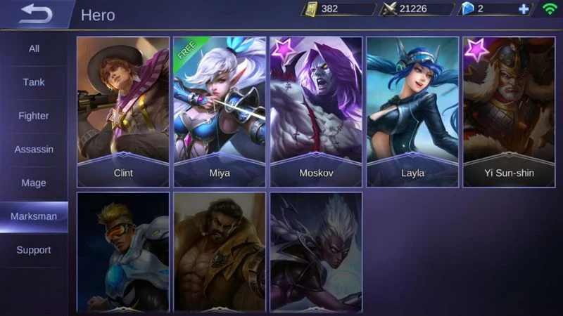
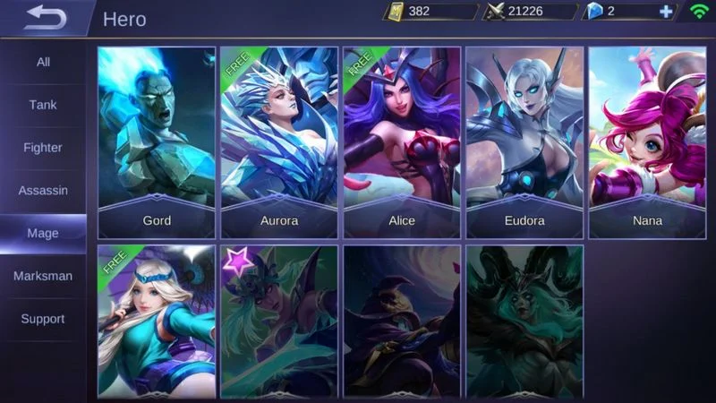

Tank merupakan hero dengan defensif yang tinggi. Tank mampu menahan damage lebih banyak dari hero lainnya. Para pengguna hero tank harus memiliki jiwa 'berani mati' bagi tim kalian, terutama bagi hero marksman yang menjadi kunci permainan. Selain itu, hero tank rata-rata merupakan hero yang harus melakukan inisiasi ketika terjadi teamfight dan menjadi garis depan tim.
Tugas tank adalah menjaga rekan satu tim kalian dan jangan takut mati demi tim. Pada awal game, kalian bisa melakukan gank atau bahkan membantu hero teman yang terkena gank. Di pertengahan sampai akhir game kalian harus ada di garis depan untuk melakukan inisiasi dan mempermudah tugas anggota tim lainnya.

maskman
Maskman
Marksman merupakan hero yang biasanya memiliki damage yang cukup tinggi dan attack speed yang baik. Hero jenis marksman dapat menghabisi musuh lebih cepat dari role lainnya, maka tak jarang hero marksman seringkali menjadi pemeran utama dalam game. Namun perlu diperhatikan juga marksman sangatlah lemah di awal game karena max HP yang kecil dan rentan untuk diincar oleh para hero ganker musuh.
Tugas marksman di awal game adalah farming untuk mendapatkan item dengan cepat. Marksman harus selalu waspada dengan minimap. Apabila melihat banyak hero yang hilang dari map, kalian harus berhati-hati dan jangan segan meminta bantuan tim kalian. Memasuki pertengahan sampai akhir game kalian sudah harus mengambil alih permainan dengan menghancurkan tower dan membunuh musuh sebanyak-banyaknya bersama tim kalian.

mage
Mage
Mage merupakan hero yang memiliki skill-skill dengan magic damage yang tinggi. Hero tipe magic ini adalah hero yang berjaya dari awal sampai pertengahan game. Dengan kombinasi-kombinasi skill yang dimilikinya, hero mage mampu menghabisi lawan dalam hitungan detik. Namun perlu diperhatikan juga bahwa hero mage memiliki HP dan armor yang kecil sehingga mudah mati.
Tugas mage adalah mengganggu pergerakan tim musuh. Pada awal game, usahakan untuk bergerak mengelilingi map untuk mengganggu musuh atau membunuhnya. Mulai dari pertengahan sampai akhir game, hero mage mulai kehilangan potensinya untuk melakukan kill ke hero musuh. Usahakan untuk mengurangi HP musuh sebanyak yang kalian bisa dan biarkan marksman kalian menghabisi sisanya.